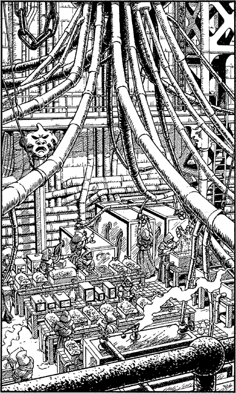

50
Through the wide opening in the chamber wall there is a gallery which overlooks a vast windowless hall. You approach the gallery’s railed parapet and stare down at a score of druids who are working at tiled tables positioned in rows across the floor. Upon some tables rest porcelain troughs filled with oily fluids which seethe beneath a constant shower of electrical sparks. Other tables support dozens of glass boxes of differing sizes. The smallest contain rats; the largest contain horses. Hundreds of pipes and tubes run around the walls, feeding a supply of fluids and gases to the experiment tables. The fumes rising from this diabolical laboratory sting your eyes, but you ignore the discomfort and continue your observations, eager to take in every detail of the evil work which is taking place below. It is not long before you recognize that this hall is where the deadly plague virus and its vaccine are being produced.

You know that you must act with all haste for Arch Druid Cadak is still alive and, wherever he is at present, you can be sure he is plotting to capture or kill you, probably both. Below lies that which you have come here to destroy. But how will you accomplish your task? Relentlessly the seconds tick by as you try to formulate a plan. Then you see something which sparks an idea. The pipes that feed fluids to the laboratory’s disposal tanks are connected to a massive cauldron suspended from the ceiling by a winch and chains. You focus upon a plaque fixed to the side of this great vat and magnify your vision until you can read what has been engraved upon it. With grim satisfaction you read the words: ‘Danger—Concentrated Acid’.
Here is the key to the destruction of the virus. If you can cause the cauldron to tilt over far enough it will discharge its contents into the hall below, flooding the virus-laden tables with thousands of gallons of concentrated acid.
Elated by your daring plan, you look for a way to reach the winch which controls the angle at which the cauldron hangs from the ceiling. It is positioned high upon a platform atop an iron gantry, which is accessible only by ladder. Fortunately this ladder begins on the far side of the gallery.
Confident in your purpose you hurry around the gallery towards the ladder. You are within twenty paces when suddenly the harsh clang of an alarm bell fills the hall. You have been seen.